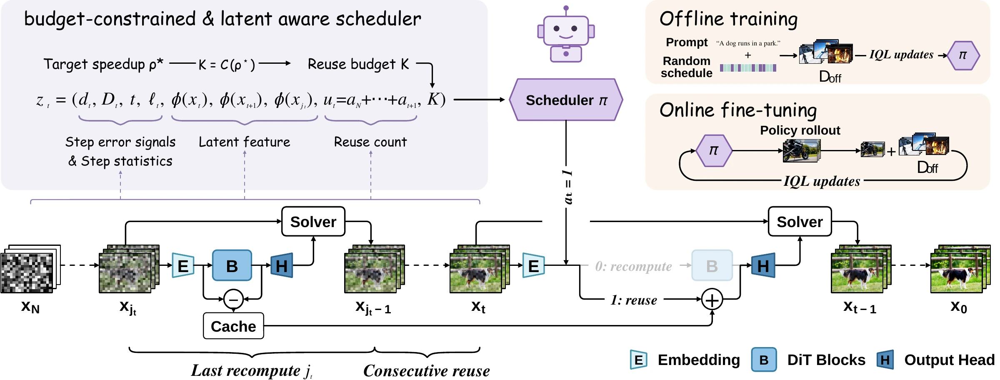
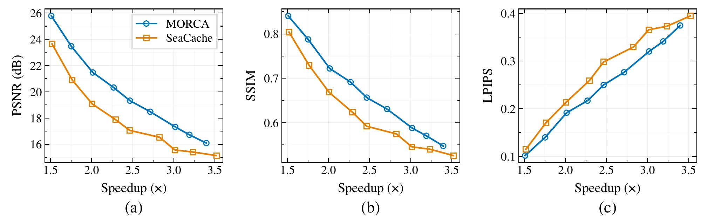
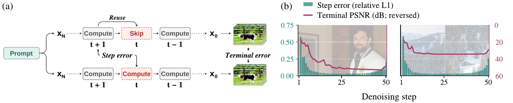
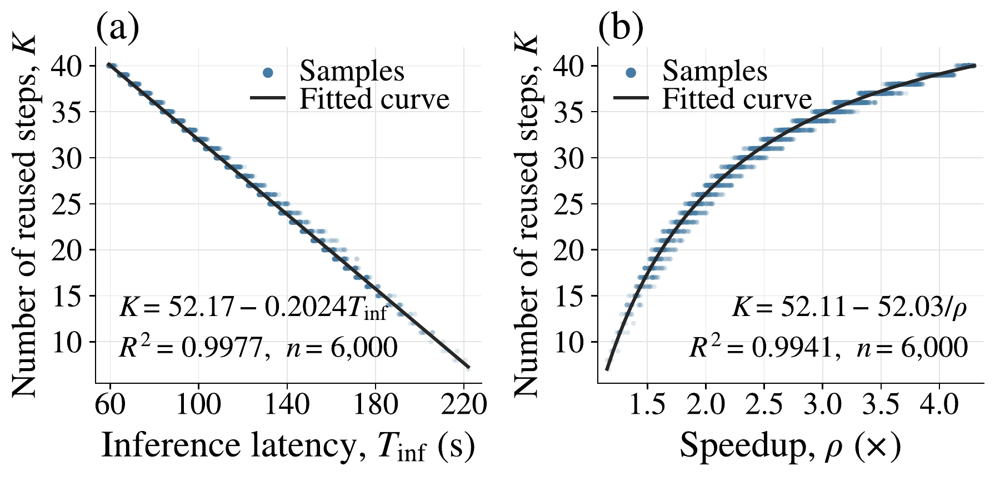
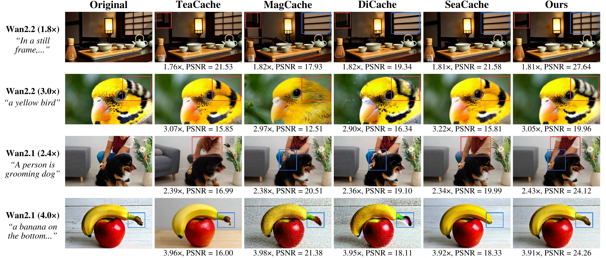

MORCA is a cache scheduling framework trained through offline-to-online reinforcement learning. It makes latent-aware reuse/recompute decisions under user-specified acceleration targets, improving generation fidelity at comparable computational budgets.

A learned scheduler observes latent features, step-error proxies, and the remaining reuse budget to decide whether to reuse cached outputs or recompute. The scheduler is optimized through offline-to-online IQL training.
Diffusion Transformers (DiTs) achieve remarkable performance in video synthesis, but their iterative denoising process suffers from high inference latency. To address this, caching has emerged as an effective acceleration strategy by capitalizing on inter-step redundancy during denoising. Existing dynamic caching methods typically estimate the error that cache reuse would introduce at each denoising step (step error) to guide cache decisions, whereas our concern is how much quality loss cache reuse would cause in the final generated video (terminal error). We show that step error does not directly correspond to terminal error and that latent information helps capture their relationship, thereby informing cache decisions. Moreover, existing threshold-based methods cannot provide precise speedup control, making it difficult to meet practical requirements for user-specified acceleration targets. To address these limitations, we introduce MORCA, a cache scheduling framework trained through offline-to-online reinforcement learning to make latent-aware reuse/recompute decisions under user-specified acceleration targets. Extensive experiments on different video generation models across multiple target acceleration ratios demonstrate that MORCA achieves better generation fidelity than state-of-the-art caching methods under comparable computational budgets.

Speed–quality comparisons on Wan2.2. MORCA achieves better generation fidelity at comparable speedups.

Step error does not directly correspond to terminal error. Latent information helps capture their relationship and informs cache decisions.

The user-specified target speedup is mapped to a reuse budget for budget-constrained scheduling.
Visual comparisons with existing caching methods. Differences in structure and fine details are highlighted in the boxed regions.

Qualitative comparison with baselines. Differences are highlighted in the boxed regions.